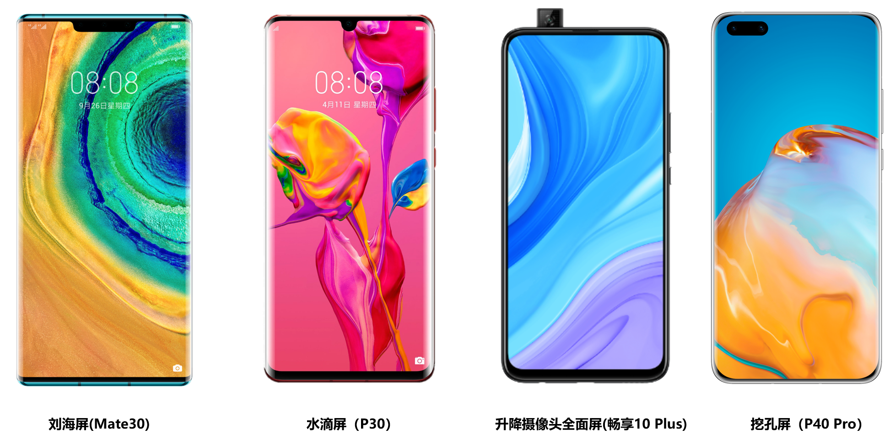

2024-06-08 21:32:12 · YinHao

window.visualViewport获取状态栏高度在 iOS 平台上，我们可以借助window.visualViewport对象来获取状态栏高度。下面是示例代码：
const statusBarHeight = window.visualViewport.offsetTop;
console.log("状态栏高度：", statusBarHeight);
这段代码将输出状态栏的高度，让你可以根据需要进行相应的适配操作。
window.screen属性及媒体查询检测刘海屏及计算状态栏高度对于安卓平台，我们可以使用window.screen属性来计算刘海屏和状态栏高度。同时，通过媒体查询的方式检测是否存在刘海屏。下面是示例代码：
const devicePixelRatio = window.devicePixelRatio;
const screenHeight = window.screen.height;
let statusBarHeight = 0;
if (window.matchMedia("(display-cutout: constant)").matches) {
statusBarHeight = Math.round(24 * devicePixelRatio); // 这里的24需要根据设备实际情况进行调整
}
console.log("状态栏高度：", statusBarHeight);
这段代码将获取设备的像素比和屏幕高度，并根据媒体查询检测刘海屏，并计算出状态栏的高度。
为了实现更好的代码复用性，我们可以封装通用方法来获取状态栏高度，并处理异常情况。下面是示例代码：
function getStatusBarHeight() {
let statusBarHeight = 0;
if (window.visualViewport) {
statusBarHeight = window.visualViewport.offsetTop;
} else if (
window.screen &&
window.matchMedia("(display-cutout: constant)").matches
) {
const devicePixelRatio = window.devicePixelRatio;
const screenHeight = window.screen.height;
statusBarHeight = Math.round(24 * devicePixelRatio); // 这里的24需要根据设备实际情况进行调整
}
return statusBarHeight;
}
const statusBarHeight = getStatusBarHeight();
console.log("状态栏高度：", statusBarHeight);
通过封装通用方法，你可以在不同平台下使用同一段代码来获取状态栏高度，并在异常情况下提供默认高度。
cordova-plugin-statusbar与react-native-safe-area-context对于更精确的适配方案，你可以借助一些插件和库来简化开发工作。cordova-plugin-statusbar和react-native-safe-area-context是两个非常常用的工具，它们提供了更多功能和更精细的控制。你可以根据项目的需要选择合适的插件和库，并参考官方文档进行使用。
掌握了基本的适配技巧后，你可以进一步深入探索一些高级技巧和解决方案。例如，你可以根据不同设备的刘海屏形状和位置，调整布局和样式，以便更好地适配。此外，你还可以利用动态计算和过渡效果来提升用户体验，使应用在刘海屏和状态栏高度变化时能平滑过渡。
在实践中，你还可以探索一些第三方库和工具，如@react-native-community/react-native-safe-area-context和vue-safe-area-mixin等，它们提供了更便捷的适配方案，让你能更加专注于业务逻辑的开发。
适配刘海屏和状态栏高度对于保证应用的美观和用户体验至关重要。通过本文分享的解决方案和技巧，你可以轻松应对各种全机型的适配挑战。
在选择适配方案时，根据应用类型和目标平台选择合适的解决方案是至关重要的。借助通用方法的封装和插件库的应用，你可以更高效地完成适配工作，并且还可以针对特定情况进行深度探索和优化。